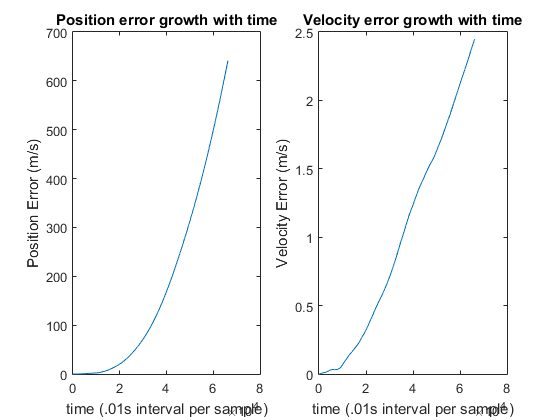
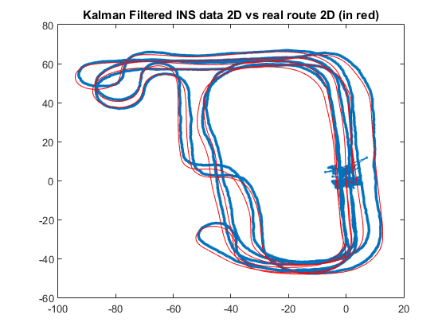

Calculating Device Trajectory
Gourab Datta 227071 Device Trajectory
Contents
clear all; close all; clc; load('imudata.txt');
Step 1:Calculating device trajectory without sensor error
% Calling for function f_Device_Trajectory_Without_Error() to calculate % device trajectory without sensor error x = f_Device_Trajectory_Without_Error();
Step 2:Device trajectory after adding sensor error
% 1) for acceleration noise (white noise only), Enter n = 1 % 2) for acceleration noise (Scale Factor,Bias and white noise ), Enter n = 2 % 3) for gyro noise (white noise only), Enter n = 3 % 4) for both acc and gyro noise (white noise only), Enter n = 4 %n = input('Enter a number: '); n = 4; % Calling for function f_Device_Trajectory_With_Error() to calculate % device trajectory after adding sensor error [x_n,a_L_meas_n,acc_noise] = f_Device_Trajectory_With_Error(n,x);
Step 3: Creating a GPS Simulation
% GPS Simulation
GPSdata = f_Simulate_GPS_data(x);
Step 4:Using Kalman Filter for GNSS/INSS integration to mitigate error
% GPS aided INS solution % Using Simulated GPS data for INS KF x_history_INS = f_KF_INS(x,GPSdata,a_L_meas_n,acc_noise,n);
Step 5:Using Kalman Filter on GPS data to mitigate GPS error
% Using Kalman Filter on GPS data Without INS
x_history_GPS = f_KF_GPS(x,GPSdata);